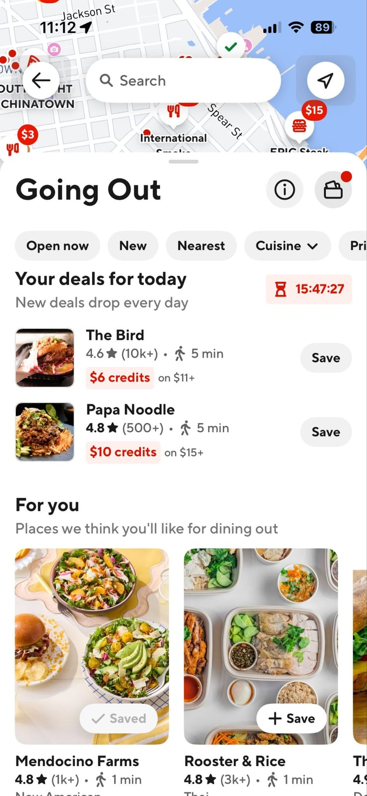

Thoughtful experiences.
Built to work in real life.
I design consumer experiences—and the systems that make them possible.
01 / DOORDASHMake DoorDash
Make DoorDash
more affordable
A new meal program, from how customers discover it to how merchants bring it to life.
Walk through the case study ↗
02 / DOORDASH, IN PERSONA reason
A reason
to go out
Helping people discover somewhere worth going—and find more value in their membership.
Membership benefits

03 / HOW I BUILDLess distance between
Less distance between
an idea and a working experience
I use AI to explore, build, and iterate—then check the details against real product behavior and source material.
Work that reaches the product
A merged UI refinement, with the implementation and review trail visible.
PR #158017 · merged April 22 ↗One place for feedback and progress
Track iterations, preview the exact screen, and carry decisions into the next pass.
Open tracker ↗Real food. Real visual context.
A reusable image bank makes explorations feel like the product customers will use.
Open image bank ↗One system across every screen
Shared frames, type and motion, with an explicit registry for the assets used in the deck.
Open master library ↗